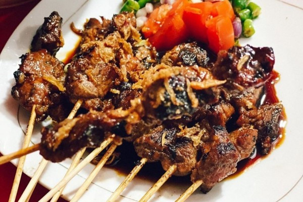

Loading...
Profil sate




Profil Sate
Sate Madura Cak Kacong
Pemilik usaha sate Madura cak kacong bernama bapak USMAN yang tempat usahanya berada di purwodadi,usaha ini di dirikan sejak 2013,pendapatan terbesarnya sekitar 1.500.000, dan pendapatan terkecilnya waktu masa covid itu sekitar 15.000.
Sate Madura adalah makanan tradisional Indonesia yang terkenal karena rasanya yang gurih, manis, dan sedikit pedas. Bumbu kacang yang digunakan dalam membuat sate Madura adalah bumbu yang paling penting dan memberikan rasa yang khas. Berikut adalah beberapa resep sate Madura yang dapat dicoba untuk menikmati makanan ini dengan cara yang lebih mudah dan praktis
13
Tahun Didirikan